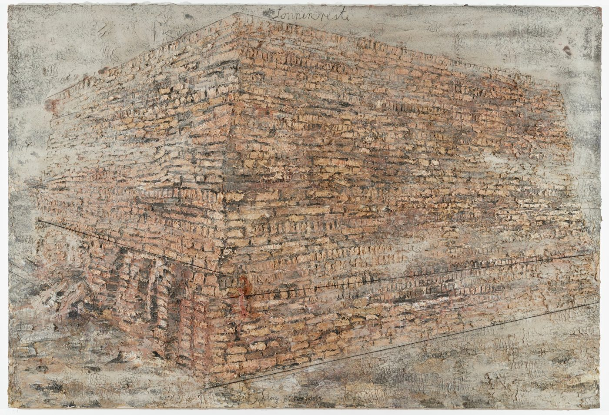

Education
Georgia Institute of TechnologyExpected May 2028
B.S. Computer Science · Threads: Systems & Architecture, Information Internetworks · GPA 4.0
- Coursework: Operating Systems, Networking II, Algorithms Analysis, Processor Design, Linear Algebra
Experience
Susquehanna International GroupJun – Aug 2026
Trading Systems Engineering Intern · Bala Cynwyd, PA
- Built a C++ market-making engine with two other interns; placed second across intern teams in both PnL and wire-to-wire latency (p50, p99)
- Built a Bayesian intraday volume forecasting model that cut MSE 44% vs. a 30-day EMA volume profile on less liquid names and 21% on liquid names
- Placed second on slippage variance with a C++ VWAP execution algorithm that scheduled fills using a market impact model driven by volume forecasts and short-term price signals
Manhattan AssociatesMay – Aug 2025
Software Engineering Intern, Cloud · Atlanta, GA
- Saved $53k/yr in cloud spend with a C# CI/CD pipeline that resizes VMs across multi-tenant groups
- Reduced storage account spend 16% by automating file purging with a Python Azure Function
- Enabled a Fortune 500 retailer to deploy custom business logic by architecting VPN and Azure Function integrations
UGA Center for the Ecology of Infectious DiseasesJun – Aug 2024
Research Assistant (REU) · Athens, GA
- Built visualizations of state-level pandemic data in R to support a group modeling vaccination timing; presented findings to 15 researchers
UGA School of ComputingAug 2023 – May 2024
Research Assistant · Athens, GA
- Co-authored a paper on transformer-based time series forecasting (BigData 2024)
- Unified R and Python (PyTorch, TensorFlow) pipelines into a framework used by 4 graduate projects
Projects
Throughput-Optimized Matching Engine
- Frequent-batch-auction exchange in C++23 reaching 1.02M orders/s using batched syscalls
- Used perf to trace bottlenecks such as an HPET clocksource inflating syscall cost and unbalanced softirq handling
- Cut matching logic to ~2% of CPU time with a batched lock-free SPSC ring buffer; benchmarked io_uring against batched syscalls (no net gain on this workload)
Kaggle ASHRAE III
- Silver medal (top 3%) for predicting building energy consumption with a gradient-boosted tree ensemble
Publications
Rana, S., Miller, J.A., Nesbit, J., Barna, N.H., Aldosari, M., Arpinar, I.B.
How Effective are Time Series Models for Pandemic Forecasting? IEEE BigData 2024.
Activities
Georgia Tech Formula SAE Electric RacingJan – Apr 2025
DriveBrain Software Engineer
- Added a torque controller to the software stack (server, CAN, Protobuf, microcontroller) for torque vectoring
- Wrote car environment simulation software in C++ to speed up development cycles
Skills
- Languages:
- C++, Python, C
- Systems & tooling:
- Linux, CMake, Nix, Git, perf, GDB
- Libraries:
- PyTorch, NumPy, Pandas
Thought experiments, data explorations, and tales from the whirlwind.
The High
May 2025

It is strange that the exhibit that caught my eye was the one I ought relate to least. There was a painful torsion in the bodies laid out before me. The circle of mangled steel around me spun, and I saw the motion of cavalry trampling children, the pleading mothers, and the fighting men. As I spun further, I saw those same mothers and fathers with sickles at the throats of fleeing crowds. The loop of devastation had no end, and the compassion of the story was rewarded only with blood.
I circled back toward the entrance. A composition of frames of life, music, and tradition laid behind a wall of shattered glass. Blood drooled out of bullet holes in every photo. In another layer, more photos, more sheet music was mâchéd with blood over some of the holes.
A Ziggurat, growing out of the canvas with its red clay bricks, loomed over me. Chains of slavery hung from the pinnacle of the structure, caked red.
Let's Dance
November 2025
My world has been swirling lately. There is no one reason, no one question, no one confusion, but rather, an excited malaise, a feeling that sense has abandoned the world, and action alone has taken over.
So, we dance. We dance until things make sense again; we dance until the haze of the club is replaced by a clarity of regret.
I open my eyes under an array of laser light and let my head spin. My arms punch to the snap of a grated drum. Every spin of my head, every lyric shouted to a friend is another question answered. Every glimpse of my brother and his fiance twirling in the crowd gives me direction.
Oddly enough, in this moment of twirling, the swirling stopped.